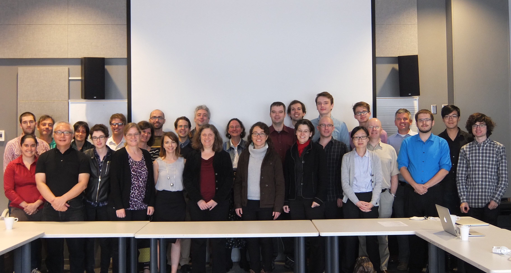

SIMSSA Workshop IV, no. 1
Posted by cmotuz on September 30, 2014
Yesterday’s CIRMMT Workshop, the fourth to feature the SIMSSA project, kicked off with a summary and update by Ichiro Fujinaga.
Ichiro opened the session with a summary of all SIMSSA has become so far. It is like “Google scores…minus Google.” (Well ok, a little bit of Google: Douglas Eck is on our advisory board.) Its main toolset still revolves around Optical Music Recognition, but it now also offers sophisticated musical querying, in the form of ELVIS.
The main goal of SIMSSA is to provide access to digitized scores worldwide, from a single website. This involves not only the interlinking of libraries (see our Partners to see which libraries are on board so far), but also finding a wealth of music in books that have already been digitized by Google Books, Hathi Trust or other online resources.
SIMSSA is redefining what “access” to scores means. Right now, musicians are enjoying huge online digital repositories of music, but these are searchable using metadata—”data about data”—alone, i.e. title, composer name, and other details only if catalogued by whoever uploaded the file. SIMSSA would like to provide users the opportunity to search what has not been catalogued by offering musical queries (more on what a musical query is another time). In order to do this, it has to render digitized sheet music, which is normally uploaded as an image or PDF, into encoded music, which it does using Optical Music Recognition (OMR). This past summer, students have been working to bring OMR to the web by building tools and tying them together in “Rodan.”
But Ichiro didn’t go into the details—this came later in the session—but reminded us of the big picture of SIMSSA. We are the “Home Depot for the music librarian”, not digitizing libraries ourselves, but providing the tools to put digitized scores to meaningful use. Along with OMR tools, these include diva.js, our image viewer, and ELVIS. SIMSSA also integrates and promotes other people’s cutting edge contributions to the field, like MEI and music21. While we focus on OMR, we integrate it with the metadata painstakingly compiled by those at RISM and Cantus, to name a few close collaborators.
The project has been made possible through a series of grants, starting with a 3-year SSHRC partnership development grant (2011-14). The ELVIS component was developed separately in a “Digging into Data” grant (2012-14), and—this is the big one—a SSHRC partnership grant for $2.5M over 7-8 years, received in spring 2014, complemented by $227,500 from McGill. In addition to this, the Cantus Ultimus project received a SSHRC Insight grant received $500K over six years, and $55K over two years has been awarded to a MIRAI project by the FRQSC. All of these combined has given SIMSSA $3.2M, plus at least $1M in in-kind contributions from our partners—a very good start for bringing digitized music scores to a new level.